12 IP weighting and marginal structural models
# Packages
library(tidyverse)
# Parameters
# NHEFS data
file_nhefs <- here::here("data/nhefs.rds")
# Round and format vector
round_format <- function(x, nsmall = 2, ...) {
format(round(x, digits = nsmall), nsmall = nsmall, ...)
}
# Print tibble
kable <- function(x, cols = where(is.double), nsmall = 2, align = "r", ...) {
x %>%
mutate(across({{cols}}, round_format, nsmall = nsmall)) %>%
knitr::kable(align = align, ...) %>%
kableExtra::kable_styling(full_width = FALSE, position = "left")
}
# Print min, mean, and max of vector
kable_summary <- function(x, nsmall = 2, ...) {
tibble(min = min(x), mean = mean(x), max = max(x)) %>%
kable(nsmall = nsmall, ...)
}
#===============================================================================
# NHEFS data
nhefs <- read_rds(file_nhefs)
# NHEFS censored for those with weight measurements in 1982
nhefs_censored <-
nhefs %>%
drop_na(wt82, wt82_71)12.1 The causal question
The data are from the National Health and Nutrition Examination Survey 1 Epidemiologic Follow-up Study (NHEFS). The data are drawn from two questionnaires, one taken in 1971 and the other in 1982. Below we will be using these variables:
active: In your usual day, how active are you? in 1971- 0: Very active
- 1: Moderately active
- 2: Inactive
age: Age in 1971death: Death by 1992- 0: No
- 1: Yes
education: Amount of education by 1971- 1: 8th grade or less
- 2: High school dropout
- 3: High school
- 4: College dropout
- 5: College or more
exercise: In recreation, how much exercise? in 1971- 0: Much exercise
- 1: Moderate exercise
- 2: Little or no exercise
qsmk: Quit smoking between 1971 and 1982 questionnaires- 0: No
- 1: Yes
race: Race in 1971- 0: White
- 1: Black or other
sex: Sex- 0: Male
- 1: Female
smokeintensity: Number of cigarettes smoked per day in 1971smokeintensity82_71: Increase in number of cigarettes smoked per day between 1971 and 1982smokeyrs: Years of smokingwt71: Weight in 1971 (kilograms)wt82: Weight in 1982 (kilograms)wt82_71: Weight change between 1971 and 1982 (kilograms)
The causal question is: What is the average causal effect of smoking cessation (qsmk) on weight gain (wt82_71)?
In the following, we will examine the censored dataset of those with weight measurements in 1982. Number of people in dataset.
nrow(nhefs_censored)#> [1] 1566Range of ages.
range(nhefs_censored$age)#> [1] 25 74Average weight gains in quitters and non-quitters.
v <-
nhefs_censored %>%
group_by(qsmk) %>%
summarize(across(wt82_71, mean))
kable(v, nsmall = 1)| qsmk | wt82_71 |
|---|---|
| 0 | 2.0 |
| 1 | 4.5 |
The average weight gain was 2.0 kg in non-quitters and 4.5 kg in quitters.
Create a simple linear model to get an estimate the difference in average weight gains with a 95% confidence interval.
fit <- lm(wt82_71 ~ qsmk, data = nhefs_censored)
broom::tidy(fit, conf.int = TRUE) %>%
filter(term == "qsmk1") %>%
select(estimate, conf_low = conf.low, conf_high = conf.high) %>%
kable(nsmall = 1)| estimate | conf_low | conf_high |
|---|---|---|
| 2.5 | 1.7 | 3.4 |
Table 12.1.
var_descriptions <-
c(
age = "Age (years)",
male = "Men (%)",
white = "White (%)",
university = "University (%)",
wt71 = "Weight (kg)",
smokeintensity = "Cigarettes per day",
smokeyrs = "Years smoking",
little_exercise = "Little exercise (%)",
inactive = "Inactive life (%)"
)
nhefs_censored %>%
transmute(
qsmk,
age,
male = sex == "0",
white = race == "0",
university = education == "5",
wt71,
smokeintensity,
smokeyrs,
little_exercise = exercise == "2",
inactive = active == "2"
) %>%
group_by(qsmk) %>%
summarize(across(everything(), mean)) %>%
mutate(
across(c(male, white, university, little_exercise, inactive), ~ 100 * .)
) %>%
pivot_longer(cols = !qsmk, names_to = "Mean baseline characteristics") %>%
pivot_wider(names_from = qsmk, names_prefix = "A = ") %>%
mutate(across(`Mean baseline characteristics`, ~ var_descriptions[.])) %>%
relocate(`A = 0`, .after = `A = 1`) %>%
kable(nsmall = 1, align = "lrr")| Mean baseline characteristics | A = 1 | A = 0 |
|---|---|---|
| Age (years) | 46.2 | 42.8 |
| Men (%) | 54.6 | 46.6 |
| White (%) | 91.1 | 85.4 |
| University (%) | 15.4 | 9.9 |
| Weight (kg) | 72.4 | 70.3 |
| Cigarettes per day | 18.6 | 21.2 |
| Years smoking | 26.0 | 24.1 |
| Little exercise (%) | 40.7 | 37.9 |
| Inactive life (%) | 11.2 | 8.9 |
12.2 Estimating IP weights via modeling
Fit logistic regression model for propensity scores.
fit <-
glm(
qsmk ~ sex + poly(age, 2) + race + education + poly(wt71, 2) +
poly(smokeintensity, 2) + poly(smokeyrs, 2) + active + exercise,
family = binomial(),
data = nhefs_censored
)Non-stabilized IP weights for treatment.
ip_w_a <-
case_when(
nhefs_censored$qsmk == "0" ~ 1 / (1 - predict(fit, type = "response")),
nhefs_censored$qsmk == "1" ~ 1 / predict(fit, type = "response"),
TRUE ~ NA_real_
)
kable_summary(ip_w_a)| min | mean | max |
|---|---|---|
| 1.05 | 2.00 | 16.70 |
Estimate average treatment effect (ATE) using weighted least squares. This is a valid method for estimating the ATE but not its standard error.
fit_lm <- lm(wt82_71 ~ qsmk, data = nhefs_censored, weights = ip_w_a)
broom::tidy(fit_lm)#> # A tibble: 2 × 5
#> term estimate std.error statistic p.value
#> <chr> <dbl> <dbl> <dbl> <dbl>
#> 1 (Intercept) 1.78 0.288 6.18 8.40e-10
#> 2 qsmk1 3.44 0.408 8.43 7.47e-17Estimate ATE and its standard error using generalized estimating equation model.
fit_geeglm <-
geepack::geeglm(
wt82_71 ~ qsmk, data = nhefs_censored, weights = ip_w_a, id = seqn
)
broom::tidy(fit_geeglm)#> # A tibble: 2 × 5
#> term estimate std.error statistic p.value
#> <chr> <dbl> <dbl> <dbl> <dbl>
#> 1 (Intercept) 1.78 0.225 62.7 2.33e-15
#> 2 qsmk1 3.44 0.525 42.9 5.86e-11The two estimates for the ATE are very close.
ate_lm <- coef(fit_lm)[["qsmk1"]]
ate_geeglm <- coef(fit_geeglm)[["qsmk1"]]
ate_lm - ate_geeglm#> [1] 3.996803e-15Estimate of ATE with 95% confidence interval.
v <-
broom::tidy(fit_geeglm, conf.int = TRUE) %>%
filter(term == "qsmk1") %>%
select(estimate, conf_low = conf.low, conf_high = conf.high)
kable(v, nsmall = 1)| estimate | conf_low | conf_high |
|---|---|---|
| 3.4 | 2.4 | 4.5 |
Plot treatment levels for each confounder.
plot_treatment <- function(var, weights, bins = 25) {
v <-
nhefs_censored %>%
mutate(weights = weights) %>%
count({{var}}, qsmk, wt = weights)
if (is.factor(pull(nhefs_censored, {{var}}))) {
v %>%
ggplot(aes({{var}}, n)) +
geom_col(aes(fill = qsmk), position = "dodge")
} else if (is.numeric(pull(nhefs_censored, {{var}}))) {
v %>%
ggplot(aes({{var}})) +
geom_freqpoly(aes(color = qsmk, weight = n), bins = bins)
} else {
NULL
}
}
confounders <-
vars(
sex, age, race, education, smokeintensity, smokeyrs, active, exercise, wt71
)
confounders %>%
map(plot_treatment, weights = ip_w_a) %>%
walk(print)
 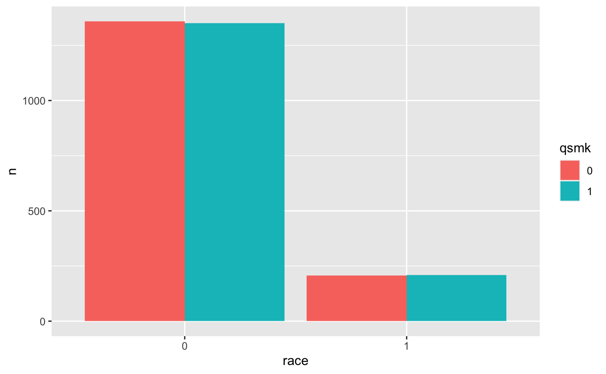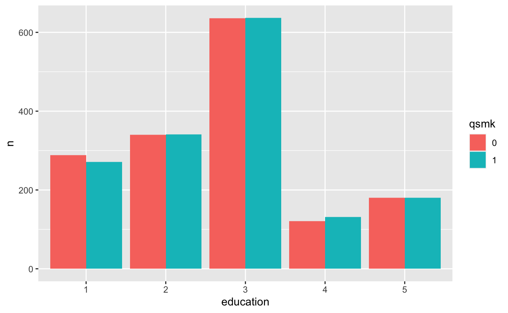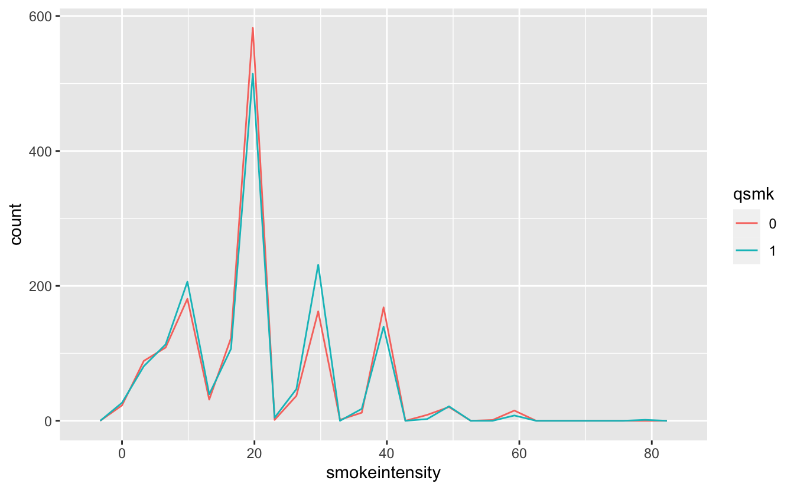
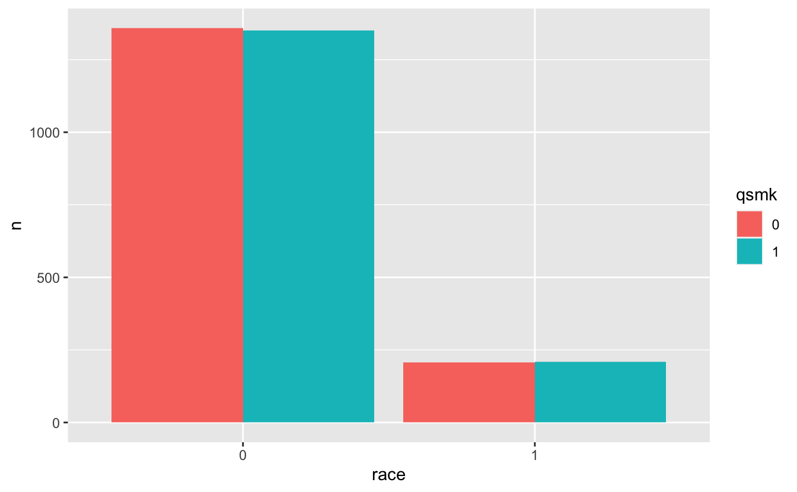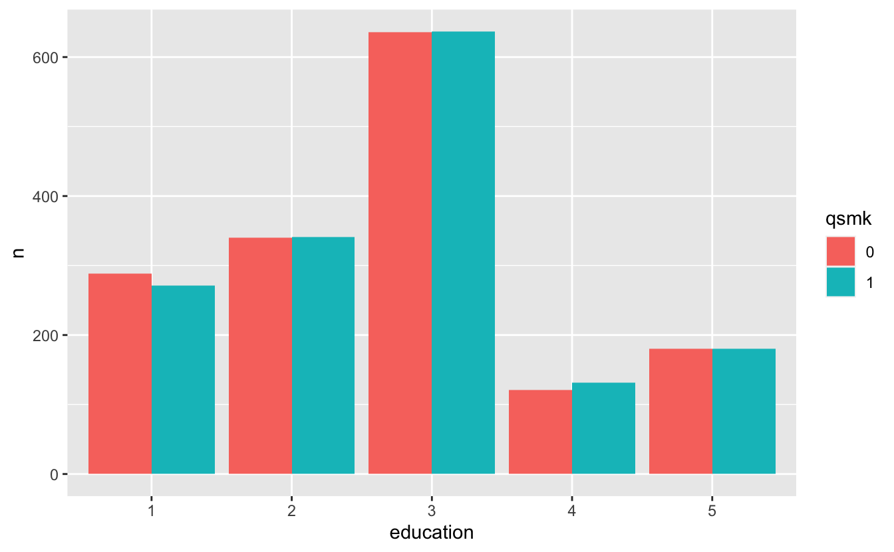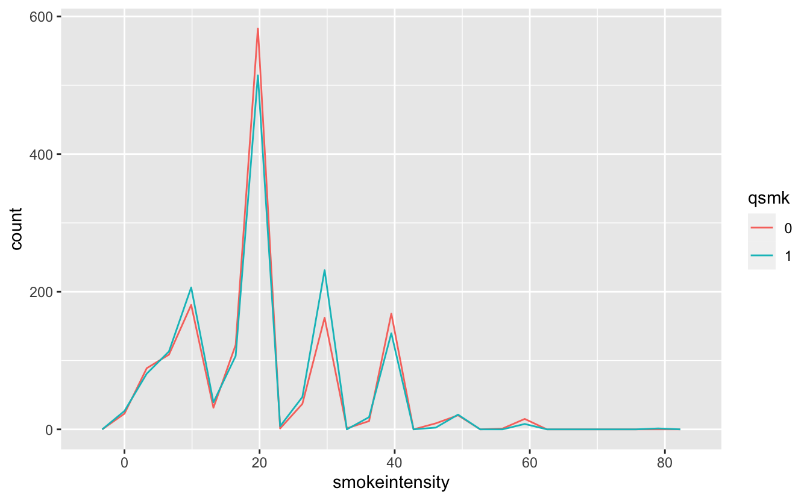

 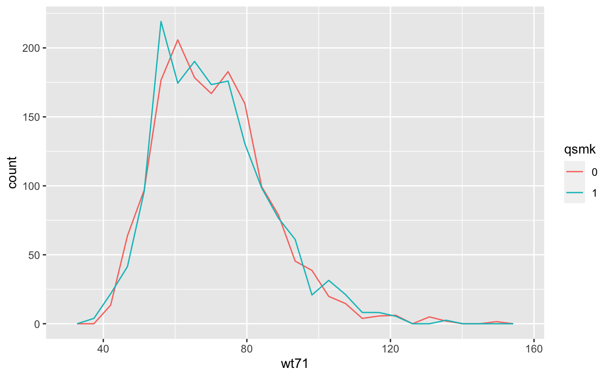
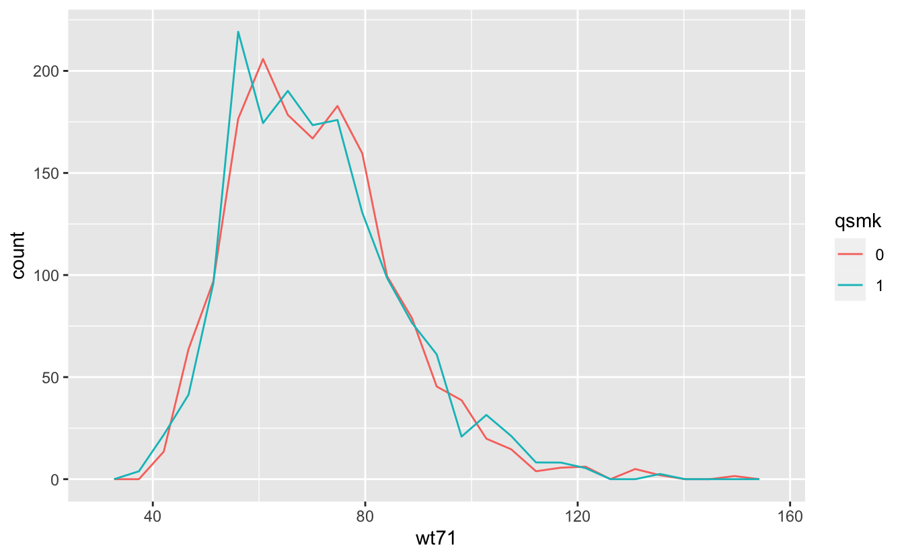
In the pseudo-population with nonstabilized IP weighting, the treatment populations are roughly equal.
12.3 Stabilized IP weights
Stabilized IP weights for treatment.
ip_sw_a <-
case_when(
nhefs_censored$qsmk == "0" ~ 1 - mean(nhefs_censored$qsmk == "1"),
nhefs_censored$qsmk == "1" ~ mean(nhefs_censored$qsmk == "1"),
TRUE ~ NA_real_
) *
ip_w_a
kable_summary(ip_sw_a)| min | mean | max |
|---|---|---|
| 0.33 | 1.00 | 4.30 |
Estimate ATE and its standard error using generalized estimating equation model.
fit_geeglm <-
geepack::geeglm(
wt82_71 ~ qsmk, data = nhefs_censored, weights = ip_sw_a, id = seqn
)
broom::tidy(fit_geeglm)#> # A tibble: 2 × 5
#> term estimate std.error statistic p.value
#> <chr> <dbl> <dbl> <dbl> <dbl>
#> 1 (Intercept) 1.78 0.225 62.7 2.33e-15
#> 2 qsmk1 3.44 0.525 42.9 5.86e-11Estimate of ATE with 95% confidence interval.
v <-
broom::tidy(fit_geeglm, conf.int = TRUE) %>%
filter(term == "qsmk1") %>%
select(estimate, conf_low = conf.low, conf_high = conf.high)
kable(v, nsmall = 1)| estimate | conf_low | conf_high |
|---|---|---|
| 3.4 | 2.4 | 4.5 |
Plot treatment levels for each confounder.
confounders %>%
map(plot_treatment, weights = ip_sw_a) %>%
walk(print) 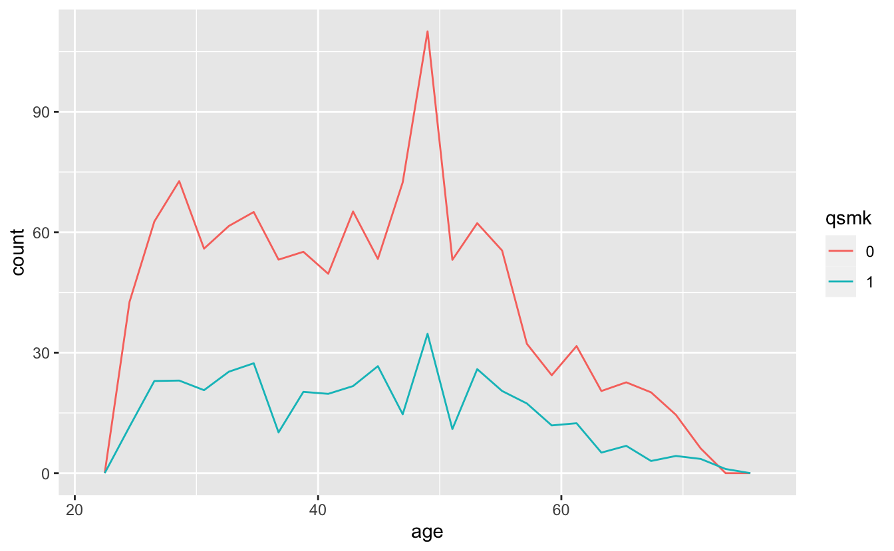
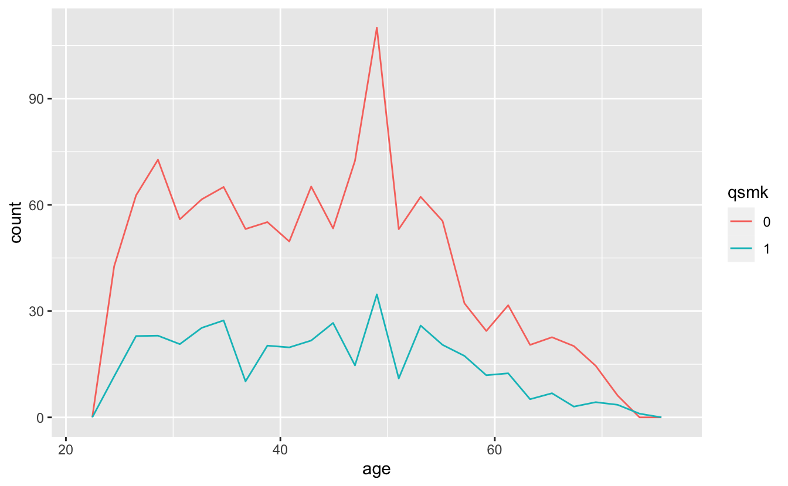
 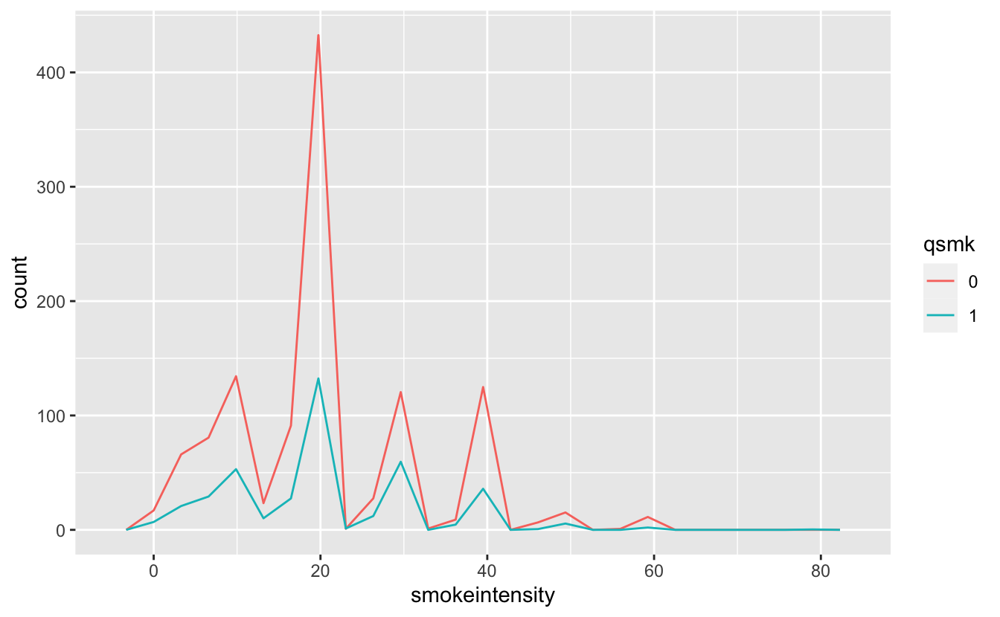
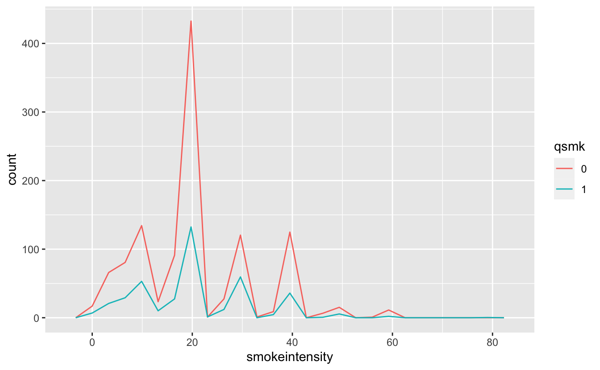

 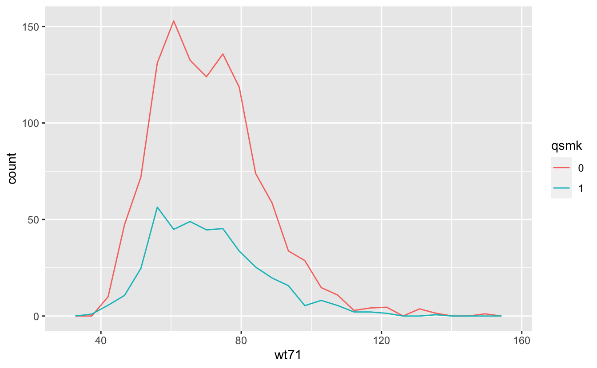
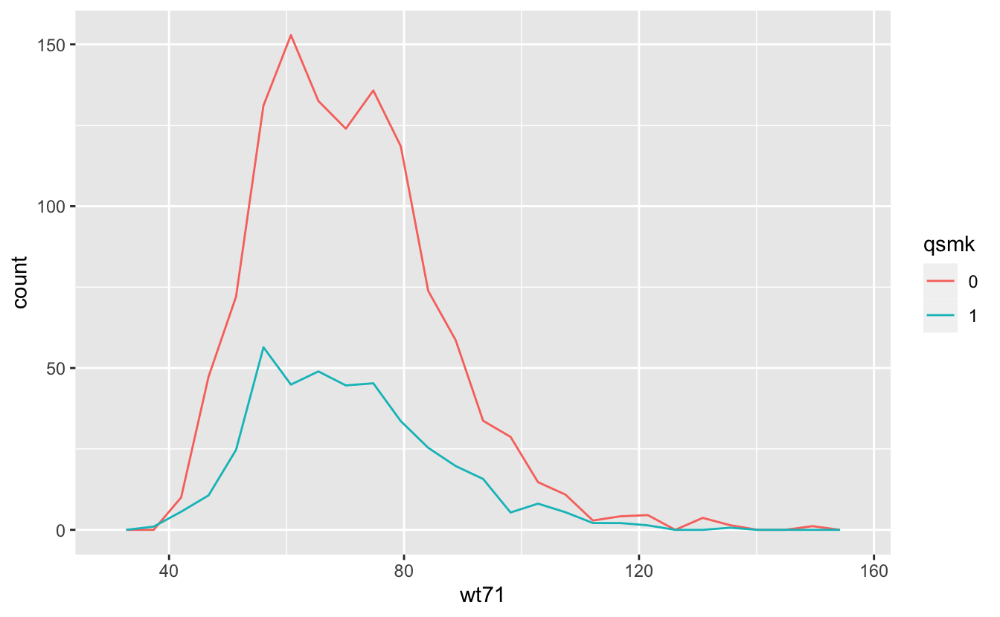
In the pseudo-population with stabilized IP weighting, the treatment populations are now unequal. These populations reflect the fact that approximately 74.3% of the participants did not quit smoking (qsmk = 0) and 25.7% of the participants did (qsmk = 1).
Fine Point 12.2 Checking positivity
Count number of individuals in all combinations of sex, age, and qsmk.
v <-
nhefs_censored %>%
expand(sex, age = full_seq(age, period = 1), qsmk) %>%
left_join(
nhefs_censored %>%
mutate(n = 1),
by = c("sex", "age", "qsmk")
) %>%
count(sex, age, qsmk, wt = n)
v#> # A tibble: 200 × 4
#> sex age qsmk n
#> <fct> <dbl> <fct> <dbl>
#> 1 0 25 0 20
#> 2 0 25 1 6
#> 3 0 26 0 21
#> 4 0 26 1 5
#> 5 0 27 0 11
#> 6 0 27 1 5
#> 7 0 28 0 22
#> 8 0 28 1 3
#> 9 0 29 0 18
#> 10 0 29 1 2
#> # … with 190 more rows
#> # ℹ Use `print(n = ...)` to see more rowsNumber of combinations by number of individuals in combination.
v %>%
ggplot(aes(n)) +
geom_bar() +
labs(
title = "Number of combinations by number of individuals in combination",
x = "Number of individuals in combination",
y = "Number of combinations"
)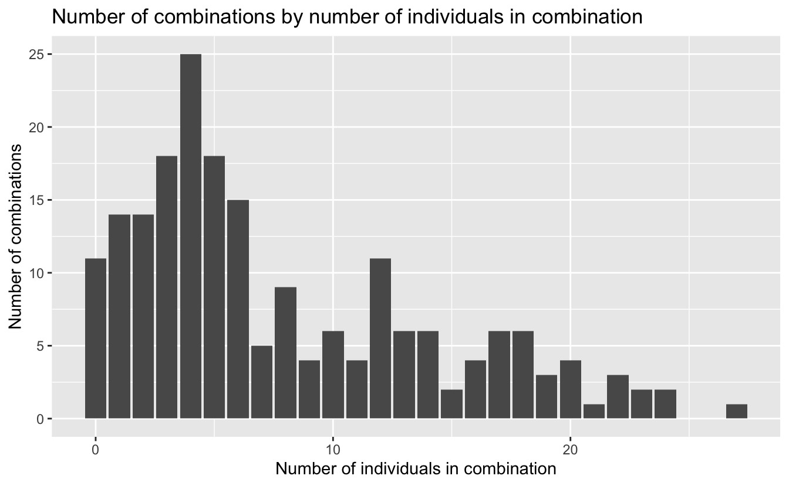
Eleven combinations have no individuals.
v %>%
filter(n == 0) %>%
kable(nsmall = 0)| sex | age | qsmk | n |
|---|---|---|---|
| 0 | 71 | 1 | 0 |
| 0 | 73 | 0 | 0 |
| 0 | 73 | 1 | 0 |
| 0 | 74 | 0 | 0 |
| 1 | 66 | 1 | 0 |
| 1 | 67 | 1 | 0 |
| 1 | 68 | 1 | 0 |
| 1 | 71 | 0 | 0 |
| 1 | 73 | 0 | 0 |
| 1 | 73 | 1 | 0 |
| 1 | 74 | 0 | 0 |
12.4 Marginal structural models
In this section, we will estimate the causal effect of the change in smoking intensity (smkintensity82_71), a continuous variable, on the average weight gain (wt82_71).
Distribution of smokeintensity.
nhefs_censored %>%
ggplot(aes(smokeintensity)) +
geom_histogram(binwidth = 5, boundary = 0) +
labs(title = "Distribution of smokeintensity")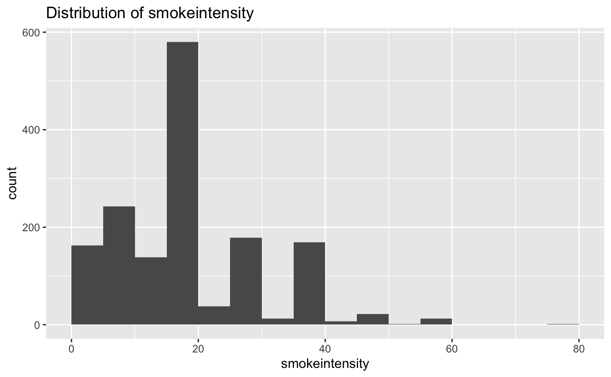
Create subset of data with individuals who smoked 25 or fewer cigarettes per day at baseline.
nhefs_censored_smoke_25 <-
nhefs_censored %>%
filter(smokeintensity <= 25)Number of individuals in subset.
nrow(nhefs_censored_smoke_25)#> [1] 1162Numerator for IP weights.
treatment <- nhefs_censored_smoke_25$smkintensity82_71
ip_numerator <-
dnorm(treatment, mean = mean(treatment), sd = sd(treatment))The numerator for the IP weights approximates smkintensity82_71 with a normal distribution. Here is the actual distribution of smkintensity82_71 with its normal approximation.
normal_approx <-
tibble(
x = seq(min(treatment), max(treatment), length.out = 201),
y = dnorm(x, mean = mean(treatment), sd = sd(treatment))
)
nhefs_censored_smoke_25 %>%
ggplot() +
geom_histogram(
aes(smkintensity82_71, stat(density)),
binwidth = 5,
boundary = 0
) +
geom_line(aes(x, y), data = normal_approx, color = "red") +
labs(
title = "Distribution of smokeintensity82_71",
subtitle = "With normal approximation in red"
)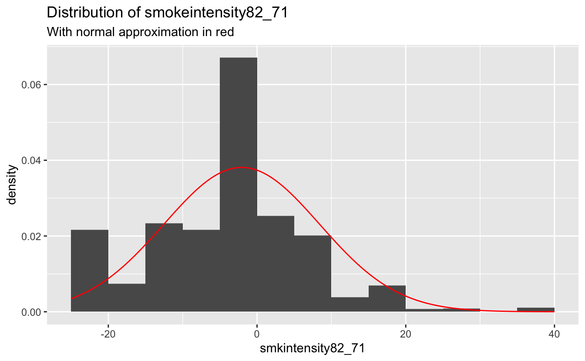
Denominator for IP weights.
fit <-
lm(
smkintensity82_71 ~ sex + poly(age, 2) + race + education + poly(wt71, 2) +
poly(smokeintensity, 2) + poly(smokeyrs, 2) + active + exercise,
data = nhefs_censored_smoke_25
)
ip_denominator <-
dnorm(treatment, mean = predict(fit, type = "response"), sd = sigma(fit))IP weights for marginal structural model.
ip_msm <- ip_numerator / ip_denominator
kable_summary(ip_msm)| min | mean | max |
|---|---|---|
| 0.19 | 1.00 | 5.10 |
Fit marginal structural model.
fit <-
geepack::geeglm(
wt82_71 ~ smkintensity82_71 + I(smkintensity82_71^2),
data = nhefs_censored_smoke_25,
weights = ip_msm,
id = seqn
)
broom::tidy(fit)#> # A tibble: 3 × 5
#> term estimate std.error statistic p.value
#> <chr> <dbl> <dbl> <dbl> <dbl>
#> 1 (Intercept) 2.00 0.295 46.1 1.10e-11
#> 2 smkintensity82_71 -0.109 0.0315 11.9 5.48e- 4
#> 3 I(smkintensity82_71^2) 0.00269 0.00242 1.24 2.65e- 1Coefficients of model.
broom::tidy(fit) %>%
select(term, estimate) %>%
kable(nsmall = 3, align = "lr")| term | estimate |
|---|---|
| (Intercept) | 2.005 |
| smkintensity82_71 | -0.109 |
| I(smkintensity82_71^2) | 0.003 |
Mean weight gain with 95% confidence interval for constant smoking intensity.
broom::tidy(fit, conf.int = TRUE) %>%
filter(term == "(Intercept)") %>%
select(estimate, conf_low = conf.low, conf_high = conf.high) %>%
kable(nsmall = 1)| estimate | conf_low | conf_high |
|---|---|---|
| 2.0 | 1.4 | 2.6 |
Mean weight gain with 95% confidence interval for increase in smoking intensity of 20 cigarettes per day.
fit <-
geepack::geeglm(
wt82_71 ~ I(smkintensity82_71 - 20) + I((smkintensity82_71 - 20)^2),
data = nhefs_censored_smoke_25,
weights = ip_msm,
id = seqn
)
broom::tidy(fit, conf.int = TRUE) %>%
filter(term == "(Intercept)") %>%
select(estimate, conf_low = conf.low, conf_high = conf.high) %>%
kable(nsmall = 1)| estimate | conf_low | conf_high |
|---|---|---|
| 0.9 | -1.7 | 3.5 |
Marginal structural model for causal effect of quitting smoking (qsmk) on the risk of death by 1992 (death). For this calculation, we will convert the type of qsmk and death from factor to double.
fit <-
nhefs_censored %>%
mutate(across(c(qsmk, death), ~ as.double(.) - 1)) %>%
geepack::geeglm(
death ~ qsmk, family = binomial(), data = ., weights = ip_sw_a, id = seqn
)
broom::tidy(fit)#> # A tibble: 2 × 5
#> term estimate std.error statistic p.value
#> <chr> <dbl> <dbl> <dbl> <dbl>
#> 1 (Intercept) -1.49 0.0789 356. 0
#> 2 qsmk 0.0301 0.157 0.0367 0.848Estimate of causal odds ratio with 95% confidence interval.
broom::tidy(fit, conf.int = TRUE, exponentiate = TRUE) %>%
filter(term == "qsmk") %>%
select(estimate, conf_low = conf.low, conf_high = conf.high) %>%
kable(nsmall = 1)| estimate | conf_low | conf_high |
|---|---|---|
| 1.0 | 0.8 | 1.4 |
12.5 Effect modification and marginal structural models
IP weights.
fit <- glm(qsmk ~ sex, family = binomial(), data = nhefs_censored)
ip_sw_a <-
case_when(
nhefs_censored$qsmk == "0" ~ (1 - predict(fit, type = "response")),
nhefs_censored$qsmk == "1" ~ predict(fit, type = "response"),
TRUE ~ NA_real_
) *
ip_w_a
kable_summary(ip_sw_a)| min | mean | max |
|---|---|---|
| 0.29 | 1.00 | 3.80 |
Fit marginal structural model.
fit <-
geepack::geeglm(
wt82_71 ~ qsmk * sex, data = nhefs_censored, weights = ip_sw_a, id = seqn
)
broom::tidy(fit)#> # A tibble: 4 × 5
#> term estimate std.error statistic p.value
#> <chr> <dbl> <dbl> <dbl> <dbl>
#> 1 (Intercept) 1.78 0.310 33.2 0.00000000845
#> 2 qsmk1 3.52 0.657 28.7 0.0000000832
#> 3 sex1 -0.00872 0.449 0.000378 0.984
#> 4 qsmk1:sex1 -0.159 1.05 0.0232 0.879Estimate of effect modification by sex.
broom::tidy(fit, conf.int = TRUE) %>%
filter(term == "qsmk1:sex1") %>%
select(estimate, conf_low = conf.low, conf_high = conf.high) %>%
kable(nsmall = 1)| estimate | conf_low | conf_high |
|---|---|---|
| -0.2 | -2.2 | 1.9 |
12.6 Censoring and missing data
Number of individuals in full dataset.
nrow(nhefs)#> [1] 1629Number of individuals whose weight in 1982 is missing.
sum(is.na(nhefs$wt82))#> [1] 63Add censored variable to nhefs to indicate whether or not weight in 1982 (wt82) is missing.
nhefs <-
nhefs %>%
mutate(censored = if_else(!is.na(wt82), 0, 1) %>% as.factor())The treatment qsmk is associated with censoring.
v <-
nhefs %>%
group_by(qsmk) %>%
summarize(censored = mean(censored == "1"))
kable(v, nsmall = 3)| qsmk | censored |
|---|---|
| 0 | 0.032 |
| 1 | 0.058 |
3.2% of non-quitters were censored versus 5.8% of quitters.
The predictor wt71 is also associated with censoring.
v <-
nhefs %>%
group_by(censored) %>%
summarize(across(wt71, mean))
kable(v, nsmall = 1)| censored | wt71 |
|---|---|
| 0 | 70.8 |
| 1 | 76.6 |
The average baseline weight was 70.8 kg in the uncensored versus 76.6 kg in the censored.
Stabilized IP weights for treatment.
ip_numerator <-
case_when(
nhefs$qsmk == "0" ~ 1 - mean(nhefs$qsmk == "1"),
nhefs$qsmk == "1" ~ mean(nhefs$qsmk == "1"),
TRUE ~ NA_real_
)
fit_denominator <-
glm(
qsmk ~ sex + poly(age, 2) + race + education + poly(wt71, 2) +
poly(smokeintensity, 2) + poly(smokeyrs, 2) + active + exercise,
family = binomial(),
data = nhefs
)
ip_denominator <-
case_when(
nhefs$qsmk == "0" ~ 1 - predict(fit_denominator, type = "response"),
nhefs$qsmk == "1" ~ predict(fit_denominator, type = "response"),
TRUE ~ NA_real_
)
ip_sw_a <- ip_numerator / ip_denominator Stabilized IP weights for censoring.
fit_numerator <- glm(censored ~ qsmk, family = binomial(), data = nhefs)
ip_numerator <-
case_when(
nhefs$censored == "0" ~ 1 - predict(fit_numerator, type = "response"),
nhefs$censored == "1" ~ predict(fit_numerator, type = "response"),
TRUE ~ NA_real_
)
fit_denominator <-
glm(
censored ~ qsmk + sex + poly(age, 2) + race + education + poly(wt71, 2) +
poly(smokeintensity, 2) + poly(smokeyrs, 2) + active + exercise,
family = binomial(),
data = nhefs
)
ip_denominator <-
case_when(
nhefs$censored == "0" ~ 1 - predict(fit_denominator, type = "response"),
nhefs$censored == "1" ~ predict(fit_denominator, type = "response"),
TRUE ~ NA_real_
)
ip_sw_c <- ip_numerator / ip_denominatorStabilized IP weights for treatment and censoring
ip_sw_ac = ip_sw_a * ip_sw_c
kable_summary(ip_sw_ac[nhefs$censored == "0"])| min | mean | max |
|---|---|---|
| 0.35 | 1.00 | 4.09 |
Estimate ATE and its standard error using generalized estimating equation model.
fit_geeglm <-
geepack::geeglm(
wt82_71 ~ qsmk,
data = nhefs_censored,
weights = ip_sw_ac[nhefs$censored == "0"],
id = seqn
)
broom::tidy(fit_geeglm)#> # A tibble: 2 × 5
#> term estimate std.error statistic p.value
#> <chr> <dbl> <dbl> <dbl> <dbl>
#> 1 (Intercept) 1.66 0.233 51.0 9.29e-13
#> 2 qsmk1 3.50 0.526 44.2 2.89e-11Estimate of ATE with 95% confidence interval.
v <-
broom::tidy(fit_geeglm, conf.int = TRUE) %>%
filter(term == "qsmk1") %>%
select(estimate, conf_low = conf.low, conf_high = conf.high)
kable(v, nsmall = 1)| estimate | conf_low | conf_high |
|---|---|---|
| 3.5 | 2.5 | 4.5 |